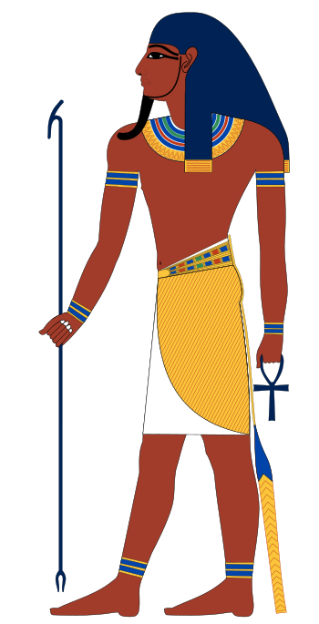
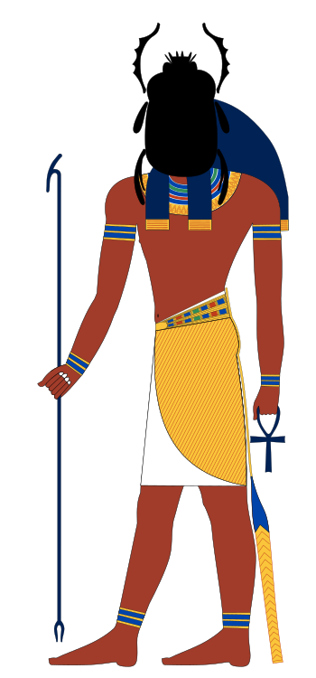
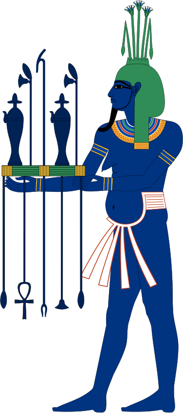
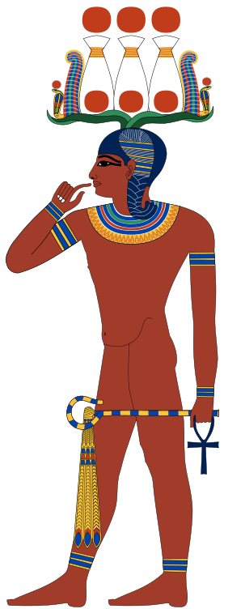
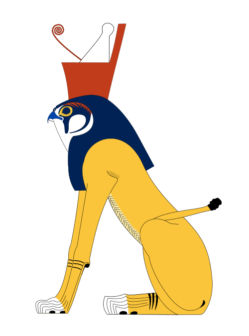
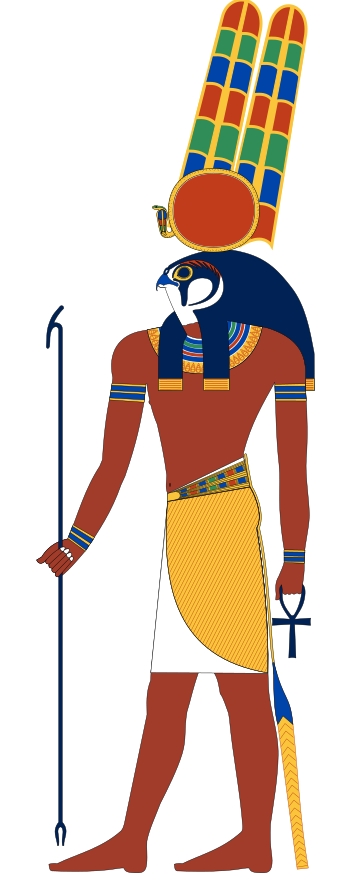
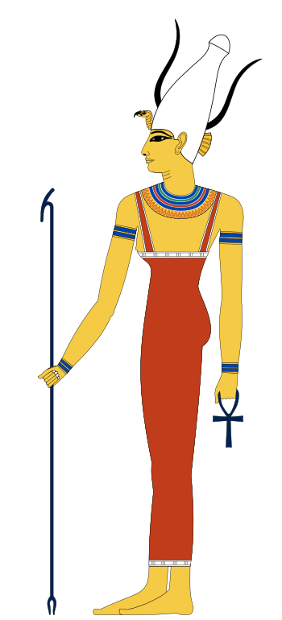
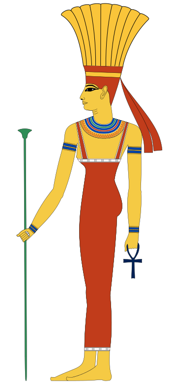
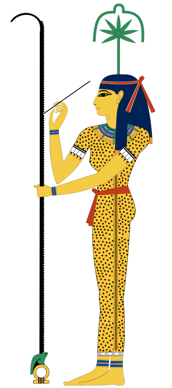

Ammit

Ammit, „die Fresserin“, ist ein Mischwesen: Sie hat den Kopf eines Krokodils, den Vorderleib eines Löwen und den Hinterleib eines Nilpferds, der drei Tiere, die die Ägypter am meisten fürchteten. Beim Totengericht steht sie neben der Waage, auf der das Herz des Verstorbenen gewogen wird. Wiegt dieses Herz, von Verfehlungen beschwert, schwerer als die Feder der Maat, verschlingt sie es.
Ammit hatte nie einen Tempel oder einen Kult: Man fürchtete sie, man betete nicht zu ihr. Sie existiert nur in den Szenen des Totengerichts, etwa denen des Totenbuchs. Von ihr verschlungen zu werden, bedeutete nicht zu sterben, sondern für immer zu verschwinden, jedes Lebens im Jenseits beraubt: der „zweite Tod“, den jeder Ägypter fürchtete.
Amun

Amun, dessen Name „der Verborgene“ bedeutet, ist der große Gott von Theben. Er wird als Mann mit einer Krone aus zwei hohen Federn dargestellt, manchmal als Widder mit gebogenen Hörnern oder als Gans. Mit seiner Gemahlin Mut und ihrem Sohn Chons bildet er die thebanische Triade.
Ursprünglich ein einfacher Lokalgott, folgte Amun dem Aufstieg Thebens. Im Neuen Reich wurde er zum Staatsgott und „König der Götter“, dem die Pharaonen ihre Siege zuschrieben. Sein Tempel in Karnak wurde der größte Ägyptens und seine Priesterschaft eine der reichsten und mächtigsten des Landes. Mit dem Sonnengott vereint, wurde er unter dem Namen Amun-Re verehrt.
Amun-Re

Amun-Re entstand aus der Verschmelzung zweier Götter: Amun, „der Verborgene“, Gott von Theben, und Re, die Sonne, Gott von Heliopolis. Er vereint, wofür jeder von ihnen steht: eine unsichtbare, allgegenwärtige Macht und das strahlende Licht, das der Welt Leben schenkt. Er wird wie Amun als Mann mit zwei hohen Federn dargestellt, oft von der Sonnenscheibe gekrönt.
Re war seit dem Alten Reich der große Sonnengott. Als Könige aus Theben im Mittleren Reich die Macht übernahmen, wurde ihr Gott Amun mit Re verbunden, um ihm landesweite Bedeutung zu verleihen. Im Neuen Reich wurde Amun-Re, der „König der Götter“, zum höchsten Gott Ägyptens, Schöpfer der Welt und Vater des Pharaos.
Anubis

Anubis ist der schakalköpfige Gott, der über die Toten wacht. Schakale streiften um die Friedhöfe am Wüstenrand: Die Ägypter machten dieses Tier zum Wächter der Gräber, damit es sie schütze, statt sie zu schänden. Seine schwarze Farbe erinnert an die fruchtbare Erde des Nils und an die Wiedergeburt, nicht an die Trauer.
Er balsamierte den Leichnam des Osiris ein und wurde so zum Schutzherrn der Balsamierer: Bei den Mumifizierungen trug der Priester, der das Ritual leitete, seine Maske. Danach geleitet er den Verstorbenen durch das Jenseits und stellt beim Gericht die Waage ein, auf der das Herz gegen die Feder der Maat gewogen wird. Nach der verbreitetsten Überlieferung ist er der Sohn von Osiris und Nephthys, aufgezogen von Isis.
Apophis

Apophis oder Apep ist eine riesige Schlange, die das Chaos verkörpert. Er existierte vor der Schöpfung in den Wassern des Nun und wurde nie erschaffen: Er kann daher nicht vernichtet werden. Jede Nacht greift er die Barke des Re während ihrer Fahrt durch die Unterwelt an, um die Sonne zu verschlingen und die Welt in die Finsternis zurückzustürzen. Jede Nacht schlagen ihn die Götter der Barke zurück, doch nie für immer.
Apophis hatte weder Tempel noch Kult: Er verkörperte alles, was die ägyptische Religion bekämpfte. In den Tempeln rezitierten die Priester ein Ritual, das „Buch vom Niederwerfen des Apophis“, um Re in seinem Kampf zu helfen: Sie formten eine Figur der Schlange aus Wachs, zertraten, durchbohrten und verbrannten sie. Dieser endlose Kampf erinnerte daran, dass die Ordnung der Welt, Maat, stets gegen das Chaos verteidigt werden musste.
Aton

Aton ist die Sonnenscheibe selbst, die sichtbare Gestalt der Sonne. Anders als die meisten ägyptischen Götter hat er weder einen Menschenkörper noch einen Tierkopf: Er wird als Scheibe dargestellt, deren Strahlen in kleinen Händen enden, die dem König und seiner Familie das Lebenszeichen, das Anch, reichen. Nicht zu verwechseln mit Atum, dem Schöpfer der Kosmogonie von Heliopolis.
Lange nur ein Aspekt des Sonnengottes, erlebte Aton im 14. Jahrhundert v. Chr. ein einzigartiges Schicksal. Der Pharao Amenophis IV. machte ihn zum einzigen Gott seines Reiches und nahm den Namen Echnaton an, „der dem Aton nützlich ist“. Er schloss die Tempel der anderen Götter, ließ den Namen des Amun ausmeißeln und gründete eine neue, dem Aton geweihte Hauptstadt, Achet-Aton, das heutige Amarna. Diese religiöse Revolution überlebte ihn nicht: Schon unter Tutanchamun wurden die alten Götter wieder eingesetzt und Amarna aufgegeben.
Atum

Atum ist der Schöpfer der Kosmogonie von Heliopolis. Sein Name bedeutet zugleich „der Vollständige“ und „der noch nicht Seiende“: Vor der Schöpfung trug er alles in sich, was einmal sein würde. Er stieg allein aus den Wassern des Nun, stellte sich auf den Urhügel und brachte aus sich selbst das erste Götterpaar hervor, Schu und Tefnut, von denen alle Götter der Neunheit abstammen.
Atum wird als bärtiger Mann dargestellt, meist mit der Doppelkrone von Ober- und Unterägypten, denn er ist der König des Universums, manchmal auch nur mit der Götterperücke. Er ist auch die Abendsonne, der Greis, der im Westen untergeht, weshalb er unter dem Namen Re-Atum mit Re vereint wurde. Seine heiligen Tiere waren die Schlange, der Aal und das Ichneumon (der Mungo). Ein Text kündigt an, dass Atum am Ende der Zeiten alles, was er erschaffen hat, zerstören und wieder zur Schlange werden wird, allein in den Wassern des Nun.
Bastet

Bastet wird als Katze oder als Frau mit Katzenkopf dargestellt, oft mit einem Sistrum, einem heiligen Musikinstrument, in der Hand. Als Göttin des Hauses, der Freude und der Mutterschaft beschützt sie die Familien und die Schwangeren. Ursprünglich war sie jedoch eine Löwengöttin, so furchterregend wie Sachmet: Die Katze ist ihre besänftigte, sanfte und schützende Gestalt.
Ihr wichtigstes Kultzentrum war Bubastis im Delta, wo ihr großer Tempel stand. Der griechische Historiker Herodot beschreibt dort ein jährliches Fest, das Hunderttausende Pilger anzog, mit Musik, Tanz und Wein. Katzen wurden dort ihr zu Ehren gezüchtet, dann mumifiziert und der Göttin zu Tausenden geweiht.
Bes

Bes ist ein bärtiger Zwerg mit grimassierendem, löwenhaftem Gesicht, der oft die Zunge herausstreckt. Er trägt eine Federkrone und schwingt manchmal Messer oder ein Tamburin. Sein furchterregendes Aussehen soll nicht die Menschen erschrecken, sondern Dämonen, Schlangen und böse Geister vertreiben.
Bes hatte nie einen großen Tempel: Er war ein sehr beliebter Hausgott. Sein Bild schmückte Betten, Kopfstützen, Spiegel und Amulette. Er beschützte den Schlaf, die Gebärenden und die Neugeborenen, oft an der Seite der Göttin Thoeris. Er war auch mit Musik, Tanz und Festen verbunden.
Chepre

Chepre ist die aufgehende Sonne. Er wird als Skarabäus oder als Mann mit einem Skarabäus als Kopf dargestellt. Die Ägypter beobachteten den Pillendreher, der seine Mistkugel vor sich herschiebt, aus der seine Jungen zu schlüpfen schienen: Sie sahen darin das Bild der Sonne, die jeden Morgen über den Himmel geschoben wird, und eines Lebens, das sich selbst erneuert.
Sein Name kommt vom Verb cheper, „entstehen, sich verwandeln“. Chepre ist die Gestalt, die Re bei Tagesanbruch annimmt, bevor er am Mittag zu Re und am Abend zu Atum wird. Als Symbol der Wiedergeburt war der Skarabäus eines der verbreitetsten Amulette Ägyptens: Man legte einen auf das Herz der Mumien, um dem Verstorbenen ein neues Leben zu sichern.
Chnum

Chnum ist ein widderköpfiger Gott mit langen, waagerechten, gewellten Hörnern. Er ist der „göttliche Töpfer“: Er wird dargestellt, wie er auf seiner Töpferscheibe die Kinder und ihren Ka, ihre Lebenskraft, formt, bevor er sie in den Leib ihrer Mutter legt. Manche Texte schreiben ihm sogar die Erschaffung der Götter und der Menschen zu.
Chnum war auch der Herr der Nilflut, die er aus Höhlen unter dem ersten Katarakt freiließ. Sein wichtigstes Heiligtum lag auf der Insel Elephantine an der Südgrenze Ägyptens, wo er mit den Göttinnen Satet und Anuket eine Triade bildete. Verehrt wurde er auch in Esna, wo sein Tempel aus römischer Zeit noch steht.
Chons

Chons, „der Durchwanderer“, ist ein Mondgott, der den Nachthimmel durchquert. Als Sohn von Amun und Mut bildet er mit ihnen die thebanische Triade. Er wird als Knabe mit der seitlichen Haarlocke dargestellt, die ägyptische Kinder trugen, oder als Mann mit Falkenkopf. In beiden Fällen trägt er eine Mondsichel mit der Mondscheibe darüber.
Als Gott der Zeit und der Monate galt Chons auch als Vertreiber böser Geister und Heiler der Kranken. Eine Stele erzählt, dass eine seiner Statuen bis in das ferne Land Bachtan gesandt wurde, um eine von einem Dämon besessene Prinzessin zu befreien. Sein Tempel steht noch heute inmitten der großen Anlage von Karnak in Theben.
Geb & Nut

Geb ist die Erde, Nut der Himmel. Als Kinder von Schu und Tefnut sind sie zugleich Bruder und Schwester und Mann und Frau. Geb wird am Boden liegend dargestellt, manchmal mit grüner Haut wie die Pflanzen, die auf ihm wachsen, und mit einer Gans auf dem Kopf, dem Zeichen, das seinen Namen schreibt. Erdbeben, so hieß es, seien sein Lachen.
Nut ist eine Frau mit gewölbtem, sternenbedecktem Körper, die die Erde mit den Finger- und Zehenspitzen berührt. Jeden Abend verschluckt sie die Sonne, die in der Nacht durch ihren Körper wandert, und bringt sie am Morgen zur Welt. Deshalb malte man ihr Bild oft auf die Innenseite von Sargdeckeln: Wie die Sonne sollte der Verstorbene aus ihrem Körper wiedergeboren werden. Geb und Nut sind die Eltern von Osiris, Horus dem Älteren, Seth, Isis und Nephthys.
Hapi

Hapi ist der Gott der Nilflut. Jeden Sommer trat der Fluss über die Ufer und bedeckte die Felder mit fruchtbarem Schlamm, ohne den in Ägypten nichts hätte wachsen können. Hapi ist die Verkörperung dieses lebenswichtigen Geschehens. Er wird als dickbäuchiger Mann mit schweren Brüsten dargestellt, mit Wasserpflanzen bekränzt und Opfergaben tragend: Diese üppigen Formen drücken den Überfluss aus, den er bringt.
Man glaubte, die Flut entspringe Höhlen nahe dem ersten Katarakt an der Südgrenze Ägyptens. Hapi hatte keinen großen Tempel, doch man sang ihm Hymnen und warf Opfergaben in den Fluss, um eine Flut zu sichern, die weder zu schwach war, was Hungersnot bedeutete, noch zu stark, was Zerstörung bedeutete. Manchmal wird er doppelt dargestellt, mit den Pflanzen des Südens und denen des Nordens, als Sinnbild der Einheit der beiden Landeshälften.
Hathor

Hathor, deren Name „Haus des Horus“ bedeutet, ist eine der beliebtesten Göttinnen Ägyptens. Sie erscheint als Kuh, als Frau mit Kuhohren oder als Frau mit Kuhhörnern, die die Sonnenscheibe umfassen. Als Göttin der Liebe, der Schönheit, der Musik, des Tanzes und der fröhlichen Trunkenheit ist sie auch die Beschützerin der Frauen und die „Herrin des Westens“, die die Toten im thebanischen Gebirge empfängt.
Als Tochter des Re ist sie auch das Auge des Re, und ihre Sanftheit verbirgt eine schreckliche Seite: Im Mythos von der Vernichtung der Menschheit ist sie es, die, in Sachmet verwandelt, die aufständischen Menschen niedermetzelte. Sie ist die Gemahlin des Horus von Edfu und die symbolische Mutter des Königs. Ihr großer Tempel steht in Dendera, wo man jedes Jahr ihr Wiedersehen mit ihrem Gemahl feierte.
Heka

Heka ist die Verkörperung der Magie, der Kraft, mit der der Schöpfer der Welt Gestalt gab. Für die Ägypter hatte Magie nichts Verbotenes: Sie war eine göttliche Macht, die Götter, Priester und Ärzte nutzten, um zu schützen, zu heilen und das Böse abzuwehren. Heka behauptete selbst, vor allen anderen Göttern existiert zu haben.
Heka fährt in der Barke des Re mit Sia, der Erkenntnis, und Hu, dem schöpferischen Wort: Zu dritt verkörpern sie die Kräfte, mit denen die Sonne die Welt erschafft und beschützt. In Esna wurde er als göttliches Kind verehrt, Sohn von Chnum und Neith, dargestellt mit dem Finger am Mund, wie kleine Kinder.
Horus

Horus ist der Falkengott, dessen Name „der Obere“ oder „der Ferne“ bedeutet, wie der Greifvogel, der hoch am Himmel schwebt. Sein rechtes Auge war die Sonne, sein linkes der Mond. Er wird als Falke oder als Mann mit Falkenkopf dargestellt, mit der Doppelkrone von Ober- und Unterägypten. Er ist der Sohn von Isis und Osiris, nicht zu verwechseln mit seinem Onkel Horus dem Älteren.
Heimlich in den Sümpfen des Deltas geboren, wo seine Mutter ihn vor Seth versteckte, wuchs Horus heran, um seinen Vater zu rächen. Nach einem langen Kampf gegen Seth wurde er von den Göttern als rechtmäßiger Erbe des ägyptischen Throns anerkannt. So wurde er zum Gott des Königtums: Jeder Pharao herrschte als „lebender Horus“. Das Horusauge, von Seth herausgerissen und dann geheilt, wurde zu einem der verbreitetsten Schutzsymbole. Sein großer Tempel steht in Edfu.
Horus der Ältere

Horus der Ältere, den die Griechen Haroeris nannten, ist eines der fünf Kinder von Geb und Nut, geboren am zweiten der Epagomenentage. Er ist ein Falkengott des Himmels, dessen Augen Sonne und Mond sind. Er darf nicht mit Horus, dem Sohn von Isis und Osiris, verwechselt werden: Die Ägypter unterschieden die beiden, auch wenn ihre Züge oft ineinander übergingen.
Als Himmels- und Kriegergott wird Horus der Ältere als Mann mit Falkenkopf oder als falkenköpfige Sphinx mit der Doppelkrone dargestellt. Er wurde in Kom Ombo verehrt, in einem Doppeltempel, dessen eine Hälfte er mit dem Krokodilgott Sobek teilte, sowie im Delta, in Letopolis.
Isis

Isis ist die Schwester und Gemahlin des Osiris und die Mutter des Horus. Sie trägt auf dem Kopf die Hieroglyphe des Throns, die ihren Namen schreibt; seit dem Neuen Reich trägt sie auch Kuhhörner, die die Sonnenscheibe umfassen, wie Hathor. Oft wird sie dargestellt, wie sie ihren Sohn stillt oder mit ausgebreiteten Flügeln ihren Gatten beweint.
Als treue Gattin und schützende Mutter sammelte Isis den zerstückelten Leichnam des Osiris und beschützte Horus, bis er den Thron zurückerobert hatte. Sie ist auch die mächtigste aller Zauberinnen, die „Zauberreiche“, die Re seinen geheimen Namen entriss. Ihr großer Tempel in Philae, im Süden Ägyptens, blieb bis ins 6. Jahrhundert geöffnet, lange nach dem Ende der anderen Kulte. Ihr Kult verbreitete sich in der ganzen griechisch-römischen Welt, bis nach Rom und an die Grenzen des Reiches.
Maat

Maat wird als Frau mit einer Straußenfeder auf dem Kopf dargestellt. Als Tochter des Re ist sie weit mehr als eine Göttin: Sie ist die Ordnung der Welt, wie der Schöpfer sie eingerichtet hat. Maat ist zugleich Wahrheit, Gerechtigkeit, Gleichgewicht und der regelmäßige Lauf der Dinge: der Aufgang der Sonne, die Wiederkehr der Flut, die Achtung der Gesetze.
Die erste Pflicht des Pharaos war es, Maat herrschen zu lassen und ihr Gegenteil, das Chaos, abzuwehren. In den Tempeln opferte der König den Göttern eine Statuette der Maat, um zu zeigen, dass er diese Aufgabe erfüllte. Auch jeder Ägypter sollte „nach der Maat leben“: Beim Totengericht wurde das Herz des Verstorbenen gegen die Feder der Göttin gewogen.
Min

Min ist der Gott der Fruchtbarkeit. Er wird stehend dargestellt, den Körper wie eine Mumie eng umhüllt, mit erigiertem Glied, mit zwei hohen Federn gekrönt, den rechten Arm erhoben, eine Geißel haltend. Hinter ihm wachsen oft Lattichpflanzen, deren weißer Saft mit dem Samen in Verbindung gebracht wurde.
Er wurde in Achmim und in Koptos verehrt, dem Ausgangspunkt der Pisten durch die Ostwüste zum Roten Meer: Er beschützte auch die Karawanen und die Prospektoren. Zu Beginn der Ernte nahm der Pharao selbst an seinem großen Fest teil, bei dem er eine Garbe Getreide schnitt. Min wurde später mit Amun verbunden, dessen Schöpferkraft er verkörperte.
Month

Month ist der Gott des Krieges. Er wird als Mann mit Falkenkopf dargestellt, mit der Sonnenscheibe und zwei hohen Federn gekrönt, manchmal als Mann mit Stierkopf, dem Tier, das seine Kraft verkörperte. Die Pharaonen verglichen sich im Kampf mit ihm und nannten sich „stark wie Month“.
Month war ursprünglich der große Gott der thebanischen Region, lange vor dem Aufstieg des Amun. Mehrere Könige der 11. Dynastie trugen seinen Namen, Mentuhotep, „Month ist zufrieden“. Er wurde in Medamud, Armant und Tod verehrt und besaß einen eigenen Tempel in der Anlage von Karnak.
Mut

Mut, deren Name „die Mutter“ bedeutet, ist die Gemahlin des Amun und die Mutter des Chons, mit denen sie die thebanische Triade bildet. Sie erscheint als Frau mit der Doppelkrone Ägyptens oder mit einer Geierhaube, denn der Geier, der ihren Namen schreibt, ist ein Symbol der Mutterschaft.
Ihr Tempel südlich des großen Amun-Tempels in Karnak war von einem halbmondförmigen heiligen See umgeben. Als symbolische Mutter des Pharaos konnte Mut auch furchterregend sein, wie Sachmet: König Amenophis III. ließ in ihrem Tempel Hunderte Statuen der Löwengöttin aufstellen, um ihren Zorn zu besänftigen.
Nechbet

Nechbet ist die Geiergöttin, Schutzherrin Oberägyptens. Sie wird als Geier mit ausgebreiteten Flügeln dargestellt, der über dem König schwebt, um ihn zu schützen, oder als Frau mit der weißen Krone des Südens. Ihr Heiligtum lag in Necheb, dem heutigen Elkab.
Mit Wadjet, der Kobragöttin Unterägyptens, bildete sie die „beiden Herrinnen“, die die Einheit von Süd und Nord versinnbildlichten. Einer der fünf offiziellen Namen des Pharaos stand unter ihrem Schutz, und ihre beiden Köpfe, Geier und Kobra, schmückten oft die Stirn des Königs, wie auf der Maske des Tutanchamun.
Nefertem

Nefertem ist der Gott des blauen Lotus und der Düfte. Er wird als junger Mann dargestellt, der eine erblühte Lotusblüte auf dem Kopf trägt, manchmal mit zwei hohen Federn darüber. In Memphis ist er der Sohn von Ptah und Sachmet und bildet mit ihnen die memphitische Triade.
Nach einem Schöpfungsmythos stieg am ersten Morgen der Welt ein riesiger Lotus aus den Wassern des Nun. Als er sich öffnete, kam die junge Sonne zum Vorschein. Nefertem verkörpert diese Blüte, die sich im Morgengrauen öffnet und am Abend schließt, und den Duft, den sie verströmt, ein Symbol der Wiedergeburt. Wie seine Mutter konnte er auch in Gestalt eines Löwen erscheinen.
Neith

Neith ist eine der ältesten Gottheiten Ägyptens, verehrt schon vor der Einigung des Landes. Als Göttin des Krieges und der Jagd hat sie als Emblem einen Bogen und zwei gekreuzte Pfeile. Sie ist auch die Schutzherrin der Weberei. Sie wird mit der roten Krone Unterägyptens dargestellt.
Ihr Kultzentrum war Sais im Delta, das unter der 26. Dynastie Hauptstadt Ägyptens wurde. In Esna galt sie als Schöpferin, aus sich selbst vor allen Göttern entstanden und Mutter des Re. In den Totenriten wachte sie mit Isis, Nephthys und Selket über die Kanopen und schützte besonders die, welche den Magen des Verstorbenen enthielt.
Nephthys

Nephthys, Tochter von Geb und Nut, ist die Schwester der Isis und die Gemahlin des Seth. Ihr Name bedeutet „Herrin des Hauses“, und sie trägt auf dem Kopf die Hieroglyphen, die ihn schreiben: ein Haus mit einem Korb darauf. Nach einer Überlieferung gebar sie Osiris einen Sohn, Anubis.
Trotz ihrer Verbindung mit Seth stellte sich Nephthys auf die Seite des Osiris. Nach dem Mord an ihrem Bruder half sie Isis, seinen Leichnam zu finden und zusammenzufügen, und die beiden Schwestern, in Milane verwandelt, beweinten ihn gemeinsam. So wurden sie zu Beschützerinnen der Toten. Nephthys wachte besonders über die Kanope, die die Lunge des Verstorbenen enthielt. Sie hatte keinen eigenen großen Tempel, und ihr Kult blieb an den der Isis gebunden.
Osiris

Osiris ist der Herrscher der Totenwelt. Er wird als Mumie dargestellt, mit grüner Haut wie die Pflanzen oder schwarzer wie die fruchtbare Erde, mit der Atef-Krone, einer hohen weißen Mitra, flankiert von zwei Federn. Er hält Krummstab und Geißel, die Insignien des Königtums.
Als ältester Sohn von Geb und Nut war er zuerst ein wohltätiger König, der die Menschen den Ackerbau lehrte. Von seinem Bruder Seth ermordet, wurde er von seiner Gemahlin Isis ins Leben zurückgeholt und herrschte dann über das Jenseits, wo er die Verstorbenen richtet. Als gestorbener und auferstandener Gott verkörperte er auch die Pflanzenwelt, die nach jeder Flut neu ersteht. Jeder Ägypter hoffte, sein Schicksal zu teilen und wie er aufzuerstehen. Seine große Kultstätte war Abydos, wo man jedes Jahr seine Mysterien feierte.
Ptah

Ptah ist der große Gott von Memphis. Er wird als Mann mit mumienartig umhülltem Körper dargestellt, mit einer blauen Kappe und einem geraden Bart. Er hält ein Zepter, das drei Symbole vereint: das Was-Zepter (die Macht), den Djed-Pfeiler (die Beständigkeit) und das Anch (das Leben).
Nach der memphitischen Theologie, die auf dem Schabaka-Stein eingemeißelt ist, erschuf Ptah die Welt durch das Denken seines Herzens und das Wort seiner Zunge. Mit seiner Gemahlin Sachmet und ihrem Sohn Nefertem bildete er die Triade von Memphis, wo der Apis-Stier als seine lebendige Verkörperung galt. Er war auch der Schutzherr der Handwerker, Bildhauer und Baumeister.
Re

Re, auch Ra, ist die Sonne, der Gott, dessen täglicher Lauf der Welt Leben schenkt. Meist wird er als Mann mit Falkenkopf dargestellt, gekrönt von der Sonnenscheibe, die eine Kobra umschlingt: Dann trägt er den Namen Re-Harachte, „Re, Horus der beiden Horizonte“. Sein großes Kultzentrum war Heliopolis.
Re wechselt im Lauf des Tages seine Gestalt: Er ist Chepre, der Skarabäus, bei Sonnenaufgang, Re am Mittag und Atum, der Greis, bei Sonnenuntergang. Die Große Sphinx von Gizeh wurde als Harmachis verehrt, „Horus im Horizont“, eine weitere seiner Gestalten. Re fährt am Tag in seiner Barke über den Himmel und in der Nacht durch die Unterwelt, wo er sich der Schlange Apophis stellt. Im Neuen Reich hieß es sogar, seine Seele vereine sich jede Nacht mit dem Leib des Osiris, um am Morgen wiedergeboren zu werden.
Seit der 5. Dynastie trug jeder Pharao den Titel „Sohn des Re“. Die Könige errichteten ihm offene Sonnenheiligtümer mit einem Obelisken in der Mitte und verbanden seinen Kult mit dem anderer großer Götter: Amun-Re in Theben, Sobek-Re im Fayum.
Sachmet

Sachmet, „die Mächtige“, ist eine löwenköpfige Göttin, gekrönt von Sonnenscheibe und Kobra. Sie verkörpert die zerstörerische Kraft der sengenden Sonne und den göttlichen Zorn. Als Gemahlin des Ptah und Mutter des Nefertem wurde sie in Memphis verehrt. In Theben weihte ihr König Amenophis III. Hunderte von Statuen.
Als Auge des Re wurde sie ausgesandt, um die aufständischen Menschen zu bestrafen, und hätte die Menschheit beinahe ausgelöscht, bis die Götter sie mit rot gefärbtem Bier betrunken machten. Man hielt sie für die Urheberin von Seuchen, doch sie konnte sie auch heilen: Ihre Priester waren für ihr medizinisches Wissen berühmt, und die ägyptischen Ärzte stellten sich unter ihren Schutz.
Satet & Anuket


Satet und Anuket sind die beiden Göttinnen des ersten Nilkatarakts an der Südgrenze Ägyptens. Mit dem Gott Chnum bildeten sie die Triade der Insel Elephantine, die über die Quelle der Flut wachte. Satet trägt die weiße Krone Oberägyptens, flankiert von zwei Antilopenhörnern; Anuket trägt eine hohe Federkrone.
Satet, „die Ausgießende“, hatte die Aufgabe, die frischen Wasser der Flut über Ägypten zu gießen. Anuket, Göttin der Stromschnellen und des Grenzgebiets, galt manchmal als ihre Tochter. Während der Flut feierte man Anuket, indem man Münzen, Gold und Schmuck in den Fluss warf.
Schu & Tefnut

Schu und Tefnut sind das erste Götterpaar, die Kinder, die Atum zu Beginn der Schöpfung aus sich selbst hervorbrachte. Schu ist der Gott der Luft und des Lichts, oft mit einer Straußenfeder auf dem Kopf dargestellt, die seinen Namen schreibt. Tefnut, seine Schwester und Gemahlin, ist die Göttin der Feuchtigkeit; sie erscheint als Frau mit Löwenkopf. Gemeinsam brachten sie Geb, die Erde, und Nut, den Himmel, hervor.
Die berühmteste Rolle des Schu ist die Trennung seiner Kinder: Auf Geb stehend, hält er mit ausgestreckten Armen den Körper der Nut empor und schafft so den Raum, in dem die Lebewesen atmen. Tefnut wiederum ist die Heldin eines Mythos, in dem sie, erzürnt über ihren Vater, in Gestalt einer Löwin in die nubische Wüste flieht, bevor sie besänftigt nach Ägypten zurückgebracht wird.
Selket

Selket, auch Serket, wird als Frau mit einem Skorpion auf dem Kopf dargestellt. Ihr Name bedeutet „die die Kehle atmen lässt“: Sie schützte vor Skorpionstichen und Schlangenbissen, die zum Ersticken führen. Ihre Priester waren Heiler, Fachleute für Gifte.
Selket spielte auch eine wichtige Rolle im Totenkult. Mit Isis, Nephthys und Neith wachte sie über die Kanopen und schützte besonders die, welche den Darm des Verstorbenen enthielt. Eines der schönsten Bilder der Göttin ist die vergoldete Statuette, die mit ausgebreiteten Armen den Kanopenschrein des Tutanchamun bewacht. In der Barke des Re ist sie es, die Apophis festhält.
Seschat

Seschat ist die Göttin der Schrift, des Rechnens und der Archive, Gefährtin oder Tochter des Thot. Sie wird als Frau im Pantherfell dargestellt, mit einem siebenstrahligen Stern unter einem Bogen auf dem Kopf, Binse und Palette des Schreibers in der Hand.
Seschat führte das Verzeichnis der Regierungsjahre der Pharaonen, indem sie ihre Namen auf die Blätter des heiligen Baumes von Heliopolis schrieb. Sie stand auch der Gründung der Tempel vor: Beim Ritual des „Strickspannens“ half sie dem König, die Schnur zu spannen, die den genauen Ort des künftigen Heiligtums festlegte.
Seth

Seth, Sohn von Geb und Nut, ist der Gott der Wüste, der Gewitter und der Unordnung. Er wird mit dem Kopf eines seltsamen Tieres dargestellt, mit langer, gebogener Schnauze und aufgerichteten, oben eckigen Ohren, das nie sicher bestimmt werden konnte. Er ist mit der Farbe Rot und dem dürren Land verbunden, das das Niltal umgibt.
Seth ist vor allem dafür bekannt, seinen Bruder Osiris ermordet zu haben, um ihm den Thron zu nehmen, bevor er von Horus besiegt wurde. Doch er war nicht immer ein verfemter Gott. In Ombos in Oberägypten verehrt, wurde er lange für seine Kraft geachtet: Die Pharaonen Sethos I. und Sethos II. trugen seinen Namen, und er ist es, der jede Nacht die Barke des Re gegen Apophis verteidigt. Erst am Ende der ägyptischen Geschichte, nach fremden Invasionen, wurde er zum Gott des Bösen und der Feinde Ägyptens.
Sobek

Sobek ist der Krokodilgott, dargestellt als Krokodil oder als Mann mit Krokodilkopf. Als Herr der Gewässer und Sümpfe verkörperte er die furchterregende Macht des Nils, aber auch die Fruchtbarkeit, die dieser bringt. Man betete zu ihm um Schutz vor den Krokodilen, die im Fluss sehr real waren.
Seine beiden großen Kultzentren waren Kom Ombo, wo er einen Doppeltempel mit Horus dem Älteren teilte, und das Fayum, wo man heilige, mit Schmuck behängte Krokodile hielt und nach ihrem Tod mumifizierte. Der Pharao Amenemhet III. aus dem Mittleren Reich förderte seinen Kult in dieser Region besonders. Mit der Sonne verbunden, wurde Sobek auch unter dem Namen Sobek-Re verehrt.
Sokar

Sokar ist ein Falkengott, Herr der Nekropole von Memphis, nach dem die Stätte Sakkara benannt sein soll. Er wird als Mann mit Falkenkopf dargestellt, manchmal mumifiziert, mit der Atef-Krone. Als Gott der Toten und der Unterwelt beschützte er auch die Handwerker, die die Edelmetalle für die Gräber bearbeiteten.
Bei seinem großen Fest in Memphis wurde seine heilige Barke, die Henu, in einer Prozession um die Mauern der Stadt getragen. Sokar war eng mit Ptah, dem Gott von Memphis, und mit Osiris, dem Herrscher der Toten, verbunden, bis die drei zu einem einzigen Gott verschmolzen, Ptah-Sokar-Osiris, der Schöpfung, Tod und Wiedergeburt vereinte.
Thoeris

Thoeris, auch Taweret, „die Große“, ist eine Nilpferdgöttin. Sie steht aufrecht, mit dem Bauch einer Schwangeren und schweren Brüsten, Löwenpranken und dem Rücken eines Krokodils. Diese furchterregende Mischung erlaubte es ihr, die Mächte des Bösen abzuschrecken.
Thoeris beschützte die Schwangeren, die Geburt und die Neugeborenen. Wie Bes, mit dem sie oft verbunden ist, hatte sie keinen großen Tempel: Man verehrte sie im Haus, in Form von Amuletten, Figuren und Bildern, die auf Betten und Gegenstände des Alltags gemalt wurden.
Thot

Thot ist der Gott der Weisheit, der Schrift und des Mondes. Er wird als Mann mit Ibiskopf dargestellt, mit Binse und Palette des Schreibers, oder in Gestalt eines Pavians. Man schrieb ihm die Erfindung der Hieroglyphen, der Mathematik und des Kalenders zu: Er war der Schutzherr der Schreiber und Gelehrten.
Als Schreiber und Bote der Götter hält er beim Wiegen des Herzens das Urteil fest, berät das Gericht, das zwischen Horus und Seth entschied, und heilt den jungen Horus, den ein Skorpion gestochen hat. Sein großes Kultzentrum war Hermopolis, wo er einen zentralen Platz in der Erschaffung der Welt einnahm. Die Griechen setzten ihn mit ihrem Gott Hermes gleich.
Upuaut

Upuaut, „der die Wege öffnet“, ist ein Wolfs- oder Schakalgott. Sein Kultzentrum war Assiut in Oberägypten, das die Griechen Lykopolis nannten, die „Stadt des Wolfes“. Als Kriegergott bahnte er dem König den Weg: Seine Standarte wurde an der Spitze der königlichen Prozessionen und der Heere getragen.
Er öffnete auch den Toten den Weg ins Jenseits. In Abydos führte er bei den Mysterien die Prozession des Osiris an. Diese Rolle im Totenkult brachte ihn Anubis nahe, dem anderen hundeartigen Gott, sodass die beiden Götter manchmal verwechselt wurden.
Wadjet

Wadjet ist die Kobragöttin, Schutzherrin Unterägyptens. Ihr Name bedeutet „die Grüne“, wie der Papyrus des Deltas. Ihr Heiligtum lag in Buto im Delta. Mit Nechbet, der Geiergöttin Oberägyptens, bildete sie die „beiden Herrinnen“, die Beschützerinnen des Königs.
In Gestalt einer aufgerichteten Kobra, des Uräus, sitzt sie auf der Stirn der Pharaonen und der Götter, bereit, ihr brennendes Gift auf deren Feinde zu speien. Sie ist so mit dem Auge des Re verbunden, der schützenden und rächenden Macht des Sonnengottes.